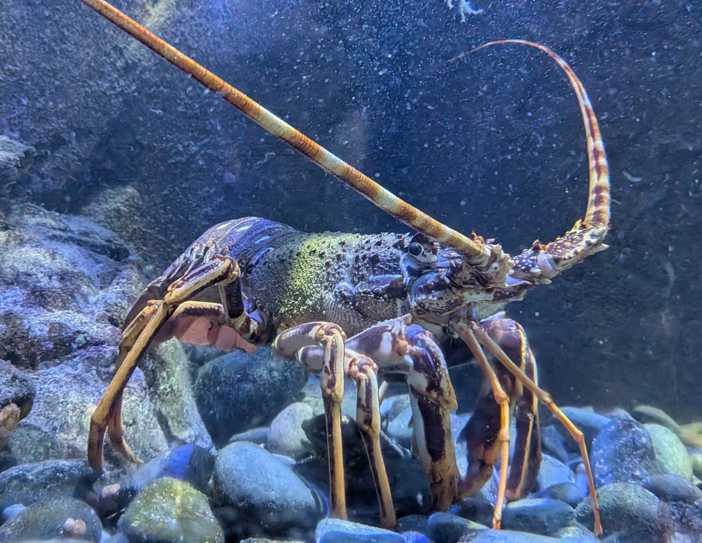

Langouste rouge
Palinurus elephas
La langouste rouge est une grande langouste des fonds rocheux. Sa carapace rouge-orangée et ses longues antennes la rendent facilement reconnaissable, tandis que l'absence de grandes pinces la distingue du homard.
Informations scientifiques
| Nom scientifique | Palinurus elephas |
|---|---|
| Nom commun | Langouste rouge |
| Famille | Palinuridae |
| Infra-ordre | Achelata |
| Ordre | Decapoda |
| Classe | Malacostraca |
| Habitat | Fonds rocheux (jusqu'à 150m), cavités et zones côtières rocheuses. |
| Répartition | Atlantique Nord-Est et Méditerranée. |
| Longueur | De 30cm à 50 cm de long. |
| Alimentation | Mollusques, crustacés, échinodermes et autres animaux benthiques. |
Description
La langouste rouge possède une carapace épineuse de couleur rouge-orangée ainsi que deux très longues antennes. Elle utilise ces antennes pour explorer son environnement.
Elle vit principalement sur les fonds rocheux, où elle peut trouver des cavités et des abris. Elle appartient aux langoustes et ne possède pas les grandes pinces caractéristiques du homard européen.